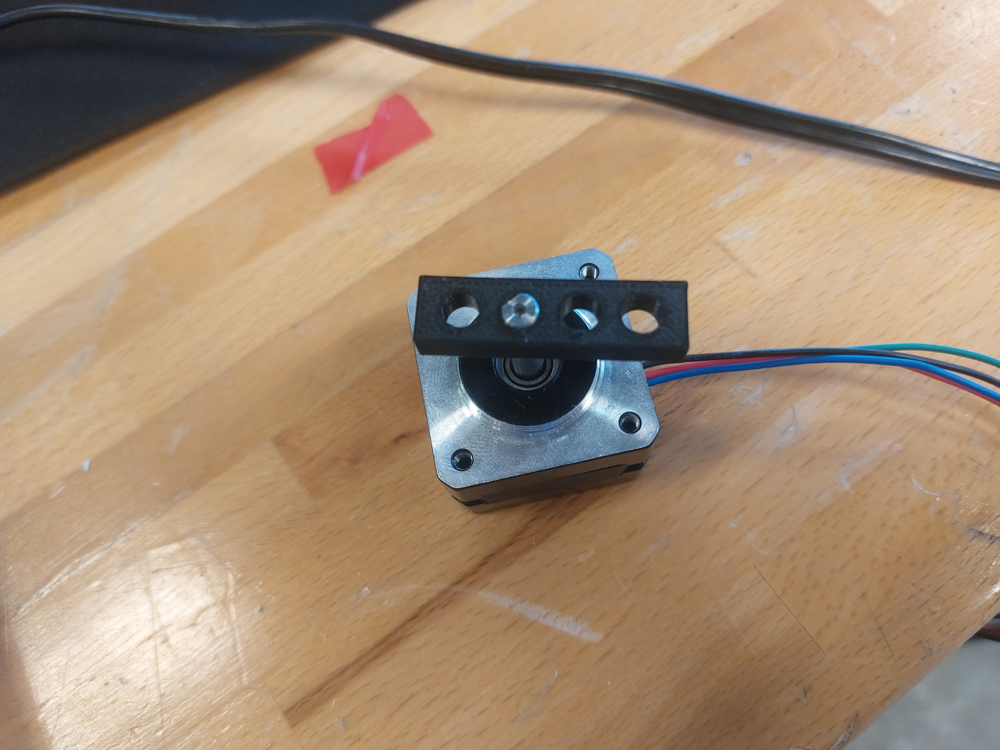

3D prentun
Undirbúningur
Eins og ævinlega var fyrsta skrefið í verkefninu var að kynna mér lýsingu á verkefninu og leiðbeiningarefni frá kennara.
Þegar ég vissi út á hvað verkefnið gengi fór ég að velta fyrir mér hvernig verkefni ég gæti gert. Það fyrsta sem mér datt í hug var að prenta eggjabikara fyrir mig og kærustu mína en þar sem plastið sem nota átti var ekki matarvænt varð sú hugmynd að engu.
Samhliða þessu verkefni vann ég einnig að verkefni í áfanganum Tölvustýrður vélbúnaður þar sem smíða átti vélmenni sem skammtar súpu. Það verkefni krafðist þónokkurrar 3d prentunar og því ákvað ég að samtvinna þessi verkefni lítillega, aðallega hvað prófanir varðar.
Prófanir
Fyrsta útgáfa testsins var svolítið stór, svo ég minnkaði hana lítillega.
Þegar hingað var komið við sögu var ég tilbúinn að prenta út testið mitt. Fyrst þurfti ég þó að hlaða niður forritinu "Prusa Slicer" og horfa á leiðbeiningarefni um hvernig skyldi nota hann.
Þegar forritið var uppsett exportaði ég einfaldlega overhang testinu mínu sem ".3mf file" og hlóð því inn í Prusa slicer. Ég fiktaði aðeins í stillingunum en endaði á að breyta bara innfill í 15%. Því næst stakk ég SD korti í tölvuna og exportaði g-code á hann.
Þegar ég stakk SD kortinu í prentarann lenti ég í meiriháttar veseni því mér tókst ekki að finna skrána. Eftir smá fikt komst ég að því að ég hafði óvart stillt á Prusa3.5 en ekki Prusa3. Ég var fljótur að laga það og prenta út testið mitt.

Eins og sjá má klikkuðu öll overhangin. Ég dróg þá ályktun að best væri að sleppa overhang alfarið, eða hafa nægilega mikið stuðningsefni.
Hluturinn sem ég vildi 3d prenta fyrir súpuróbótinn voru 2 bevel gírar. Báðir innihéldu þeir göt. Sá litli þurfti að passa á mótor og þann stóra þurfti að bolta niður. Ég ákvað því að teikna upp og prenta út einfalt test til að meta hvernig göt hegða sér í prentaranum. Ég vissi þvermál mótorpinnans sem ég ætlaði að nota svo ég teiknaði prentaði nokkur göt sem voru aðeins stærri en það. Eftir að prenta út þetta test og prófa það á mótornum ályktaði ég að þvermál gata skyldi vera u.þ.b. 0.4mm stærra en pinninn (eða annað).
Þegar ég ætlaði að prenta út stóra gírinn tók kennarinn minn hinsvegar eftir því að ég hafði valið vitlaust plastefni (glöggir hafa tekið eftir því á fyrri myndum). Ég hafði óvart valið PETG en ekki PLA. Ég tel líklegast að þessar stillingar hafi farið í eitthvað rugl þegar ég skipti um prentara. Öll fyrri prent voru því líka röng. Ég ákvað að overhang testið væri sennilega ennþá marktækt en ákvað að endurtaka holutestið.

Seinna (rétta) holutestið sýndi að eðlilegt væri að hafa þvermál gata um 0.2mm stærra en það sem passa ætti inn í þau. Litli bevel gírinn var einnig prentaður með smá stuðningsefni eins og overhang testið sýndi að væri nauðsynlegt. Þetta support efni brotnaði tiltölulega auðveldlega af og þó að áferðin eftir það væri smá ljót ákvað ég að support efni yrði ekki vandamál.

Símastandur
Ég hófst því handa við að taka ýmsar mælingar á símanum mínum og hleðslutæki og skilgreina stika í Fusion.
Því næst teiknaði ég gróflega upp sýn mína. Til hliðsjónar hafði ég nokkra símastanda sem ég fann hérna.
Á þessum tímapunkti var nokkuð ljóst að ekki væri hægt að smíða þennan símastand með hefðundnum "reductive" aðferðum, hann þyrfti að þrívíddarprenta. Mér fannst hann þó smá ljótur svo ég bætti við einni eldingu til að ítreka hleðslugetuna, einnig reyndi ég að láta fæturna hafa skörp horn til að líkja eftir eldingunni.
Þegar ég var orðinn ánægður með hönnunina stækkaði ég allar holur um 0.2mm á kant til að allt myndi vonandi passa. Svo exportaði ég standinum einfaldlega sem 3mf file og hlóð honum í Prusa slicer. Ég velti því aðeins fyrir mér hvernig yrði best að prenta hann. Ég vildi helst ekki hafa stuðningsefni inni í hleðslutækishólfinu. Ég ákvað loks að best væri að prenta hann uppréttann með smá stuðningsefni fyrir bakhliðina. Ég ákvað að hafa 0.20mm nákvæmni og 15% innfill. Ég henti prentinu af stað og 5klst seinna stóð standurinn fyrir framan mig.
Ég braut stuðningsefnið auðveldlega af og setti símann í standinn. Hann passaði fullkomlega. Því miður var holan fyrir hleðslutækið aðeins of lítil en eftir smá þjölun var það komið í lag. Lokaniðurstöðu er að finna efst á síðunni.
3D skönnun
Næst gerði ég stutta prufu á því með því að 3D skanna gleraugun mín. Það kom ágætlega út. Ég ákvað svo að framkvæma vandaðari skönnun á einum af litlu kaktusunum sem ég á heima. Sú 3D skönnun kom glæsilega út. Litlu gaddarnir á plöntunni voru smá flatir en annars náði ég að fanga megnið af lögun hennar. Hægt er að leika sér með módelið efst á síðunni.